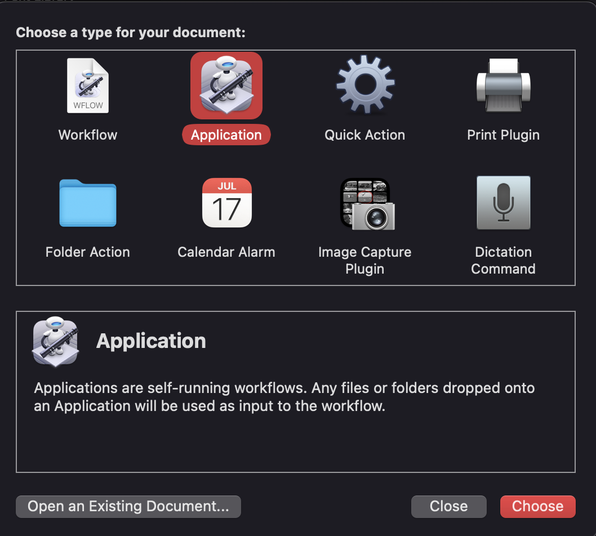
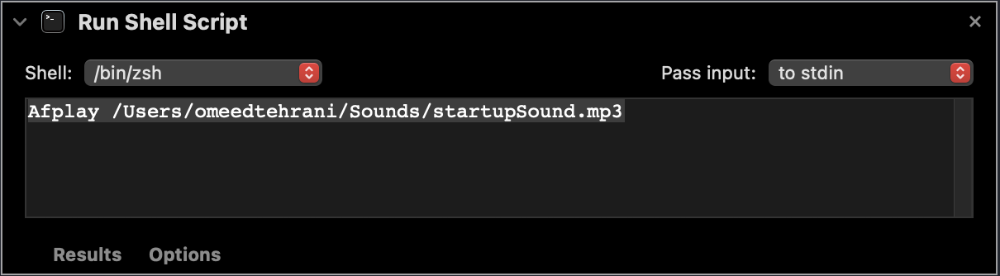
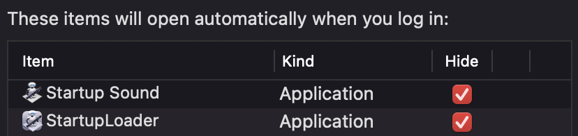

MacOS Jarvis Startup
Preface:
Whenever we start up our computers, in my opinion, it is just boring. Especially on MacOS, you hear the basic badummmmm sound, log in and that’s it. So it hit me, why not mix my love of Marvel with my passion for Computers? Turns out, this is a common thing, and after doing some research, I decided to turn my MacBook into Jarvis.
Below, I will outline step by step how to do it to your own MacBook if you are curious! It is pretty cool.
Step #1:
Open YouTube, and look up some videos that you would want to potentially see launched on your computer, post-login. For example, this one is pretty cool: Example Startup Sequence. You want to make sure to find some online source that can convert the video from YouTube to an mp4 for you.
Step #2:
Next, open the Automator application. This is typically located in the “Other” section on your MacBook application Launchpad. The whole idea behind the automater is that it is designed to help you make your Macbook do repetitive tasks for you, script specific actions, etc. If you have ever used the Shortcut application on iOS, it is something of that sort. You can actually find user guides online, but forget the user guide, I’ll show you how to do it right now. By the way, I’ve pasted below what the Icon looks like if you’re having trouble finding it.

Step #3:
Next, go to File -> New -> Application -> Choose.

Step #4:
Now, you want to type in the type of application you want. Choose “Run Applescript”.
Step #5:
The most important part is now to write two scripts:
1) For the first script, the whole idea is that you set an initial path for the script to find the startup sequence, then set delays based on how you want to align it with the sound, since the sound has to be a seperate script. Then after setting some basic arguments, you want to make sure that after the startup sequence plays, you stop it from repeating, and then you close it so it mimics what a real startup sequence would be like! I have shown the snippet of code I use locally on my machine below.
-- Version: QT 10 for OSX 10.7
on run
set unixpath to "/Users/omeedtehrani/StartupSequence.mp4"
set macfile to (POSIX file unixpath)
delay 1
tell application "QuickTime Player"
activate
delay 1
open file macfile
set looping of document 1 to false
set presenting of document 1 to true
set the bounds of the first window to {140, 100, 1280, 720}
try
set the bounds of the second window to {150, 0, 1130, 775}
end try
play document 1
repeat until (current time of document 1 = duration of document 1)
end repeat
delay 2
close document 1
end tell
end run2) For the second script, it is a very simple line. So the same approach is taken as above, except now instead of doing an AppleScript, do a “Run Shell Script”! Below, I will show a screenshot of the section that it will be placed in, and the code that is neccesary to play the sound. Keep in mind that the point of this is customization. You can find a cool video and then play another amazing startup sound alongside it. Get creative with it! If you find something on YouTube, make sure you have a way to convert it into an mp3.

Afplay /Users/omeedtehrani/Sounds/startupSound.mp3Step #6 (Final Step):
Alright! So the scripts are done. Now all we need to do is set it up to be executed on login. The task is super simple. Go into your MacBook’s settings, and click the section that says “Users and Groups”. From there, all you need to do is click “Login Items”, and then add the two startup sequences that you want to execute on login. The important thing is to have them be hidden, because we just want the items of the script to execute. Let me show you a screenshot below:

And that’s it! Thanks so much for reading this blog post and I hope your MacBook is 10x cooler now. :)